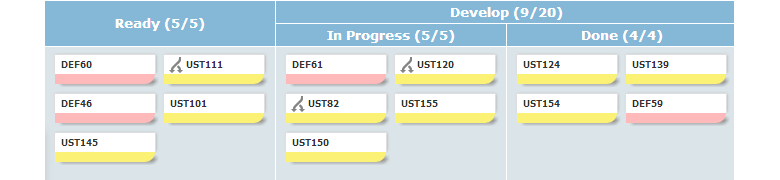
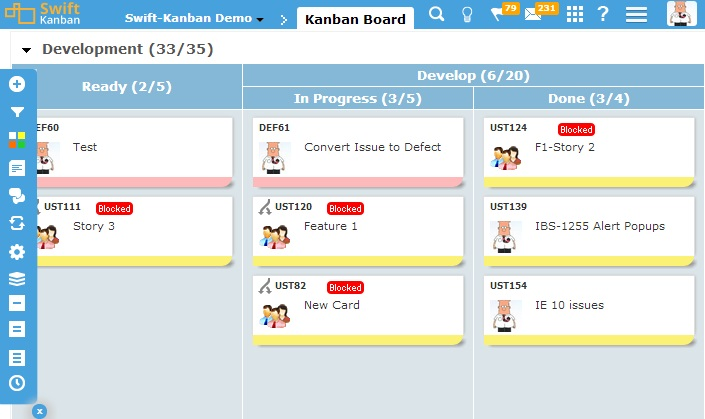
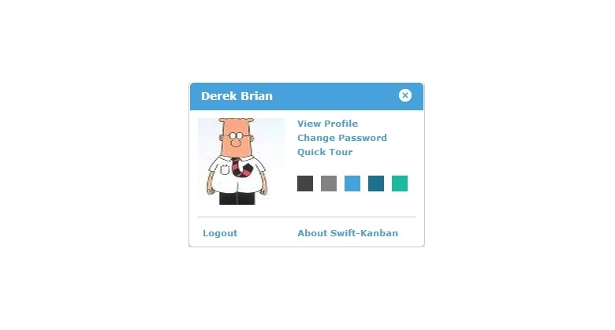
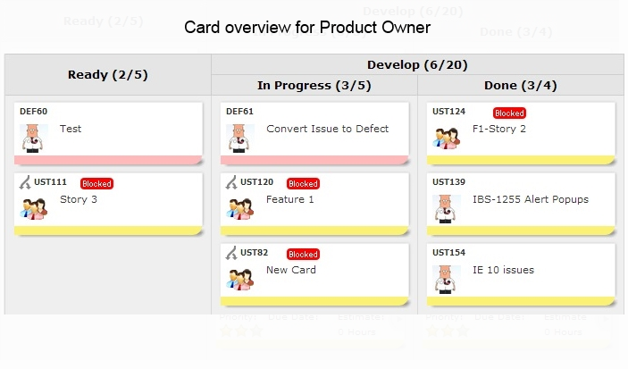
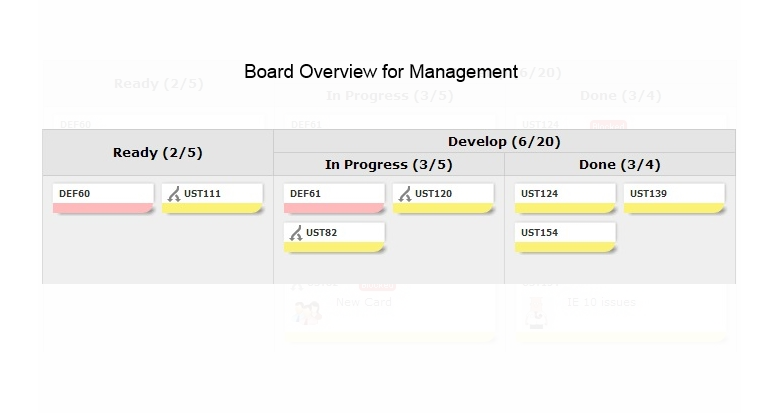

Visualize Your Workflow using SwiftKanban and quickly define your processes as lanes and
sub-lanes
on a Kanban board, representing a workflow stage through which you can flow your work.

Personalization
Choose from multiple themes for expressing your mood!


Get different level of details using board zoom! (mouse hover on image to see different board views)


Define Custom Work Cards
Define Work Cards of various types e.g. User Stories, Defects and Issues using a rich text
editor, configurable template to define your backlog, which can feed work into the Kanban board.